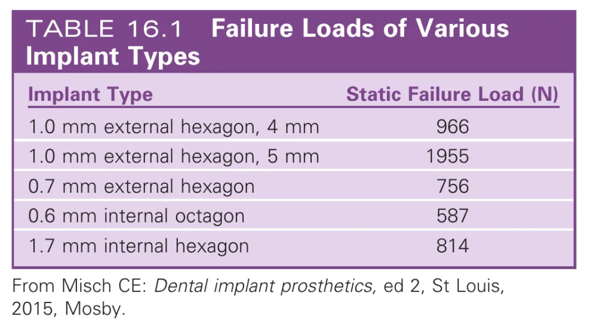
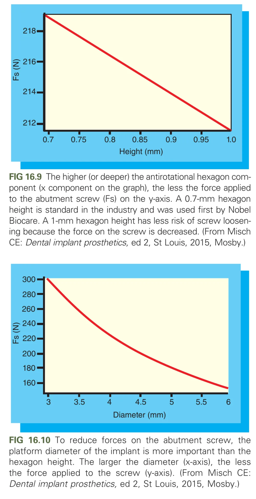

نسخه استخراجشده؛ ترجمه یا تأیید علمی انجام نشده است. وضعیت: captured
پیشبار (preload) و نیروی گیرهای، از کشیده شدن خودِ پیچ میآیند. پس جنس پیچ تعیین میکند چقدر میتوان کشید بدون آنکه بشکند.
و اختلاف مقاومت تسلیم، حیرتانگیز است:
«جنس پیچ و مقاومت تسلیم، وقتی همهی عوامل دیگر مشابهاند، بسیار متفاوتاند — برای نمونه ۱۲٫۴ نیوتن برای یک پیچ طلا تا ۸۳٫۸ نیوتن برای فیکساسیون پیچ آلیاژ تیتانیوم.» — یعنی نزدیک هفت برابر.
و مقایسهی گریدهای تیتانیوم:
و ترتیب تورک مجاز، از اینها بیرون میآید: «بزرگی تورک بالاتری میتواند بر پیچ اباتمنت آلیاژ تیتانیوم و جزء ماده (درون بدنهی ایمپلنت) به کار رود، کمتر بر تیتانیوم گرید ۴، کمتر بر تیتانیوم گرید ۱، و کمترین بر پیچهای طلا.»
و یک تمایز ظریف که اغلب اشتباه فهمیده میشود: اگرچه استحکام گریدهای تیتانیوم بهشدت متفاوت است، مدول الاستیسیته برای گرید ۱ تا ۴ مشابه است. یعنی کرنش پیچ در هر گرید مشابه است، ولی بار ایمن نسبت به شکست متفاوت است. آلیاژ تیتانیوم (گرید ۵) مدول اندکی بالاتر دارد.
و پیچ طلا؟ «یک پیچ پروتزی طلا ازدیاد طول بیشتری از پیچ آلیاژ تیتانیوم نشان میدهد، ولی مقاومت تسلیم پایینتری دارد.» — بیشتر کش میآید ولی زودتر تسلیم میشود.
و اکنون یک نکتهی مهندسی دربارهی پیچگوشتی تورکرنچ که تصمیم خرید را عوض میکند:
«برخی سازندگان درایور تورکرنچ را از آلیاژ تیتانیوم میسازند و پیچ را از طلا یا تیتانیوم. مفهوم این است که تورکرنچ هگزاگون را تغییر شکل نمیدهد و استریپ نمیشود، پس دستگاه بیشتر دوام میآورد.»
«با این حال، این ایدهآل نیست.» دلیلش ساده است: «تعویض درایور تورکرنچ آسانتر از تعویض اباتمنت یا پیچ پروتزی است. به همین دلیل، تورکرنچ باید از تیتانیوم ساخته شود و پیچ از آلیاژ تیتانیوم.» — یعنی عمداً بگذار ابزارِ ارزانتر بشکند، نه قطعهی درون دهان.
و ویژگی سر پیچ: «سر پیچ یک ویژگی چرخشی دارد، که رایجترینش طراحی هگزاگونال است. هرچه ویژگی چرخشی وجوه بیشتری داشته باشد، سر بیشتر استریپ میشود. یک شیار یا ویژگی مثلثی کمتر از هگزاگون استریپ میشود.» و پیچی که سرش استریپ شود، دیگر نه سفت میشود و نه باز.
و رزوهها: «هرچه رزوههای بیشتری روی پیچ اباتمنت وجود داشته باشد، احتمال شل شدن پیچ کمتر است.» و دربارهی جنس: «در حالت ایدهآل جنس پیچ باید آلیاژ تیتانیوم باشد، چون پیچهای آلیاژ طلا شیوع بالاتری از شل شدن و شکستن دارند.»
و سرانجام، فیت اجزا — که یک واقعیت صنعتی است نه یک نقص:
«در علم ماشینکاری اجزای فلزی، محدودهای از ابعاد وجود دارد که سازندگان به کار میبرند. برای نمونه، یک ایمپلنت با قطر ۴ میلیمتر ممکن است در واقع از ۳٫۹۹ تا ۴٫۰۱ میلیمتر متغیر باشد.»
و پیامدش: «بیشتر سازندگان ایمپلنت محدودهای از عدمانطباق را مجاز میدانند که به اباتمنت یا کوپینگ اجازه میدهد ±۱۰ درجه روی بدنهی ایمپلنت بچرخد.» و اختلافهای افقی تا ۹۹ میکرومتر گزارش شدهاند.
و قاعده: «هرچه فیت اجزا دقیقتر، نیروی کمتری بر پیچ اباتمنت یا پروتزی وارد میشود.»
و عدد مهم برای اتصال تختبهتخت هگزاگون خارجی: یک میانگین محدودهی تختبهتخت کمتر از ۰٫۰۰۵ میلیمتر روی هگزاگون وجود دارد، و یک محدودهی تختبهتخت کمتر از ۰٫۰۵ میلیمتر برای کل نمونه به یک اتصال پیچی پایدارتر میانجامد.
و یک هشدار دربارهی الگوهای پلاستیکی: «الگوهای ریختنی پلاستیکی، که میتوانند بسیار نادقیق باشند، عدمانطباق عمودی تا ۶۶ میکرومتر نشان دادهاند.» و کوپینگهای burn-out پلاستیکی ارزانترند ولی «واریانس آزمایشگاهی بسیار بیشتر و فیت ضعیف» بهدلیل بینظمیها و نشست سوپراستراکچر دارند. مزیت دیگرشان جز قیمت: کوپینگ و سوپراستراکچر از یک نوع فلز ریخته میشوند و ریسک خوردگی یا جدا شدن میانشان کمتر است.

بارهای شکست استاتیک انواع ایمپلنت:
دو مقایسهی مهم در این اعداد پنهان است:
و نتیجهی مستقیم این مقایسه: «بار شکست استاتیک برای ایمپلنتهای هگز خارجی با ارتفاع ۱ میلیمتر بیشتر از ایمپلنتهایی با هگزاگون داخلی ۱٫۷ میلیمتر بود. ایمپلنت با قطر بزرگتر، بیشترین بار استاتیک پیش از شکست را داشت.»
و دو قاعدهی کلی: «با افزایش ارتفاع (یا عمق) هگزاگون، بار روی پیچ اباتمنت کاهش مییابد.» و «با افزایش قطر پلتفرم ایمپلنت، نیرو بر پیچ اباتمنت کاهش مییابد.»
و سازوکار هندسی، که ارزش فهمیدن دقیق دارد:
«چون تاج به اباتمنت متصل است و اباتمنت روی پلتفرم ایمپلنت مینشیند، یک نیروی جانبی روی تاج، یک نیروی واژگونکننده (tipping) بر اباتمنت ایجاد میکند. این نیرو با ارتفاع یا عمق هگزاگون، پلتفرم، و پیچ اباتمنت مقاومت میشود.»
و نقطهی بحرانی: «وقتی قوس چرخش بالای ارتفاع هگزاگون باشد، تمام نیرو بر پیچ اباتمنت وارد میشود. برای اینکه ارتفاع هگزاگون بالای قوس نیروهای واژگونکننده باشد، ارتفاع هگزاگون باید دستکم ۱ میلیمتر برای یک ایمپلنت با قطر ۴ میلیمتر باشد.»
و اکنون واقعیت بازار: «با این حال، بسیاری از سازندگان ایمپلنت ارتفاع هگزاگونی تنها ۰٫۷ میلیمتر دارند، پس تقریباً تمام نیرو به پیچ اباتمنت هدایت میشود و وقوع شل شدن و شکست پیچ افزایش مییابد.» و ۰٫۷ میلیمتر استاندارد صنعت است و نخستین بار توسط Nobel Biocare به کار رفت.
اما کدامیک مهمتر است — ارتفاع هگزاگون یا قطر پلتفرم؟
شکل ۱۶٫۱۰ پاسخ میدهد: «برای کاهش نیروها بر پیچ اباتمنت، قطر پلتفرم ایمپلنت از ارتفاع هگزاگون مهمتر است.»
و دادهی بالینی که این را تأیید میکند: در یک گزارش، شل شدن پیچ اباتمنت طی یک دورهی سهساله تقریباً ۱۵ درصد برای ایمپلنت با قطر ۴ میلیمتر بود ولی کمتر از ۶ درصد برای قطر ۵ میلیمتر.
و استحکام به زبان عدد: افزایش اندازهی ایمپلنت از ۳٫۷۵ به ۵٫۰ میلیمتر به ۲۰ درصد استحکام بیشتر میانجامد، و از ۳٫۷۵ به ۶٫۰ میلیمتر استحکام را ۳۳ درصد افزایش میدهد.
و سرانجام، اتصال خارجی در برابر داخلی — با اعداد بزرگ:
و تفکیک دقیقتر بر پایهی جنس اباتمنت (MA فلزی، Zr زیرکونیا): MA-EC ۱۵٫۱ درصد، Zr-EC ۶٫۸ درصد، MA-IC ۱٫۵ درصد، Zr-IC ۰٫۹ درصد. — با هر دو جنس اباتمنت، اتصال داخلی برنده است؛ و در هر دو نوع اتصال، زیرکونیا برنده است. این یک الگوی دوگانهی تمیز است.
و یک داده که تصمیم سمانی/پیچشونده را از پیش رنگ میکند: مطالعات نشان دادهاند ترمیمهای پیچشونده (۸٫۵ درصد) شیوع بسیار بالاتری از شل شدن پیچ نسبت به ترمیمهای سمانی (۳٫۱ درصد) داشتهاند — «چون ترمیمهای سمانی پسیوترند و کرنش کمتری بر سیستم ایمپلنت دارند».
اما اندیکاسیون پیچشونده هم روشن است: وقتی گیر کمپروفایل روی یک اباتمنت کوتاه لازم است، یا وقتی بدنههای ایمپلنت بیش از ۳۰ درجه از یکدیگر فاصله دارند و اسپلینت لازم است. و یک مزیت افزوده: احتمال کمتر تحریک بافت، چون شیوع سمان باقیمانده در پروتز سمانی بالاست. — این تعارض را در یونیت ۵٫۳ کامل باز میکنیم.
